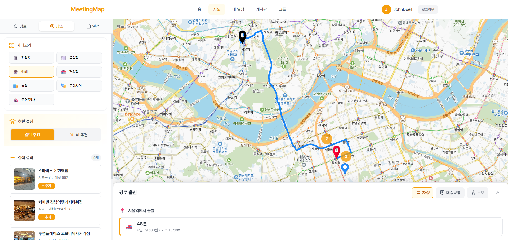
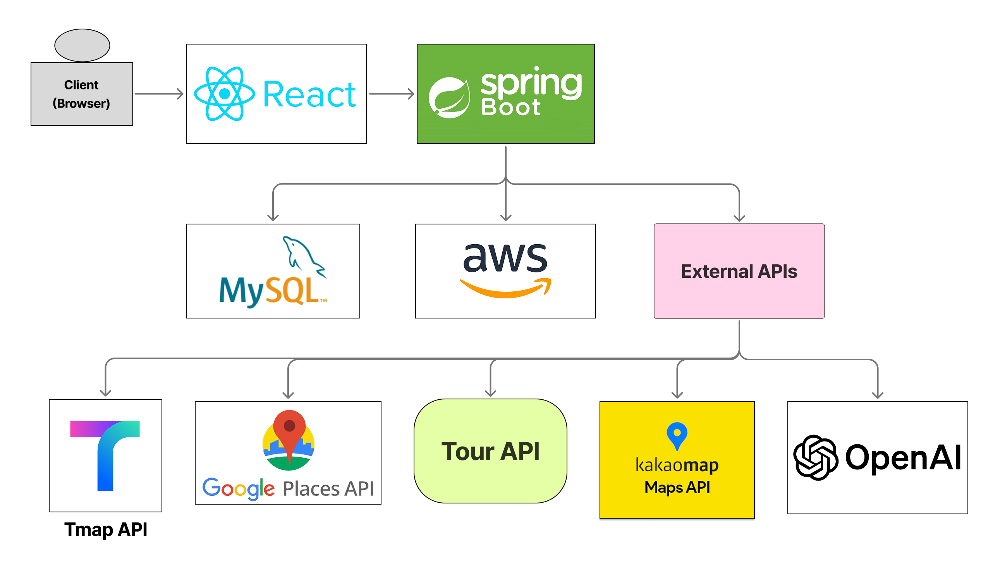

경로 기반 모임 장소 추천 및 자동 스케줄링 서비스


| 지도 / 중간지점 | 최대 4개 출발지를 입력하면 중간 지점을 자동 계산합니다. 장소명 자동완성, 현재 위치 기반 검색, 출발지-도착지 검색 등 다양한 방식을 지원합니다. |
|---|---|
| 경로 표시 | TMap API를 활용하여 도보, 자동차, 대중교통 3가지 이동 수단의 길찾기를 지원합니다. 출발지에서 중간지점까지의 경로와 예상 소요 시간을 지도 위에 표시합니다. |
| 장소 추천 | 주변 장소를 카테고리별(관광지, 음식점, 카페, 숙박)로 필터링합니다. Tour API와 Google Places API 데이터를 통합하여 평점, 리뷰 등 풍부한 정보를 제공합니다. |
| AI 스케줄 생성 | OpenAI API로 테마에 맞는 장소를 추천받고, 현재 위치에서 가장 가까운 장소를 순차 선택하여 최적 방문 순서를 계산합니다. 식사 시간대 자동 배치, 이동 수단별 소요 시간을 반영합니다. |
| 커뮤니티 | 카테고리별 게시판에서 모임 후기를 공유합니다. 이미지 첨부, 좋아요/싫어요/스크랩, 댓글 기능을 지원합니다. |
| 그룹 / 친구 | 그룹을 생성하고 친구를 초대하여 스케줄을 공유할 수 있습니다. 친구 요청/수락 기반의 소셜 기능과 그룹 전용 게시판을 제공합니다. |
| 인증 | JWT 기반 인증과 카카오 OAuth 2.0 소셜 로그인을 지원합니다. |